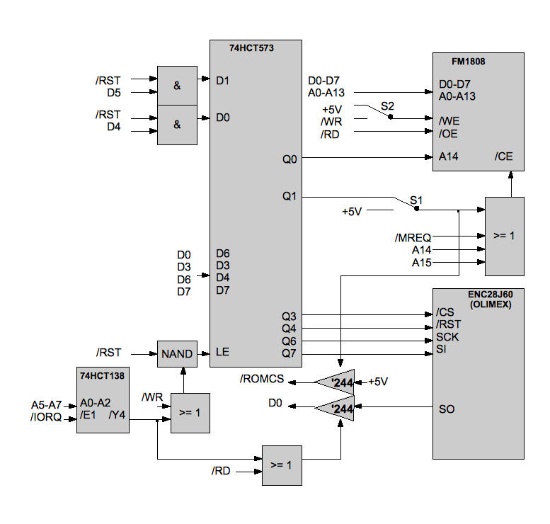

There are three parts of building a SpeccyBoot: building the hardware, building the software stack, and getting the software onto the hardware.
NOTE: I assume no responsibility for what happens if you connect this to your Spectrum. This design works well for me, but please be aware that a mistake (yours or mine) may destroy your dear Spectrum. You have been warned!
I built the device (described by the rudimentary drawing below) on a basic lab board. I'm not much of a soldering wizard, but you should probably have some soldering experience to pull this off. A few notes on the design:
Finally, you may use this hardware design as you wish. Feel free to build and sell devices based on this design; if they look good, I'd like to buy one!
To obtain and build the software, you will need the following tools:
I used the standard GCC, Make and Subversion versions included in Mac OS X 10.6, version 2.9.0 of SDCC, and compiled binutils 2.19 for Mac OS X. Any reasonably modern UNIX or Linux system should work for compilation. (Windows is probably fine too; I don't have detailed instructions, but I suspect building under Cygwin is the simplest alternative.)
Check out the release you want (for example, 1.1) and build it:
# svn co https://speccyboot.svn.sourceforge.net/svnroot/speccyboot/tags/speccyboot-1.1
# cd speccyboot-1.1
# make
When the build completes, you should have a file named speccyboot.wav in your working directory. This WAV file includes the SpeccyBoot software and a loader application, both in the format expected by the Spectrum.
If you used an EPROM/EEPROM or similar, you most likely use a dedicated EPROM programmer to get the software onto the device. In that case, you can stop reading now: these instructions are for programming the SpeccyBoot FRAM from the Spectrum.